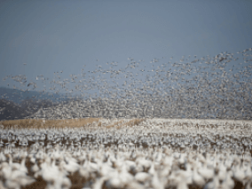
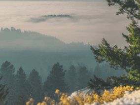

From Portland to Portland
An epic bicycle journey from Portland, ME. to Portland, OH

Your journey starts here
Know the country you live in a little better
That's exactly what we have arranged for you via this travel story
Need more action and adventure in your life instead of the same old routine? From Portland, Maine to Portland, Ohio we're going to take you on an exciting journey through some regions of the United States. Let's travel by bike starting in New England where it all began. You will go through 5 different states on this journey, traveling close to 1000 miles from the path designated here. Give yourself a couple weeks to really enjoy each state you pass through, pack yourself a bunch of your favorite snacks that can travel with you, and a lot of water. We are going for a ride.
- Distance (miles) 950
- Travel time (days) 10+


- 
- 


-
Maine

URL
maine.govStill, as sparsely populated as it was in the 1600s, this is an extraordinary and highly underrated state full of rich history and majestic natural beauty. Near to the Atlantic ocean, covered in state parks, with lots of history: Maine is the main state you want to be sure not to miss.
Maine home to the very first European settlers on US territory in the era of Vikings! Maine is also known for their Maine Lobsters, which used to be so plentiful they used them as bait for other fish (If only we knew better then)
-
New Hampshire

URL
nh.govThere's no better place to lose yourself in nature than in springtime New Hampshire. As serene and beautiful as it was in the 1700s, this state is still much less traveled than its neighbors to the South. So enjoy it while it lasts.
New Hampshire is commonly known as the Granite State, see if you can find some of the granite formations and quarries while you're passing through!
-
New York

URL
NY.govNot only famous for “The Big Apple,” the state of NY also has several other reasons for going down in history. Since the late 1800s Schenectady, “The City that Lights and Hauls the World,” has been home to the world-famous General Electric Company.
This is where modern power generators were born as well as contemporary means of transmitting energy.
New York is also famous for Manhattan/ New York City also known as "The City That Never Sleeps". Lights are always on, and there's always something going on everywhere. Time Square is known for where the ball drops to welcome the new year (The ball is up all year), so you could stop by to see it. There's many stores if you enjoy shopping, and lots of great restaurants for food.
-
Pennsylvania
URL
pa.govPennsylvania. In Erie, PA if you pass through: is most famously known as the scene of the Gettysburg address delivered by Mr. Lincoln during the Civil war. Pennsylvania also has produced a rather decent-sized Amish community, commonly known as the Pennsylvania Dutch.
One place known for in Pennsylvania, if you haven't already guessed, can be summed up by using one delicious word: chocolate. Hershey's is a Pennsylvania-based company. They have an amusement park and you could also visit and get a tour of the chocolate factory.
-
Ohio

URL
ohio.govFrom the college capital of Columbus to the clean coastline of Cleveland, Ohio is a truly hidden gem. Earthquakes are surprisingly common in this particular region of North America, over 200 of which have registered with a magnitude of 2 or higher since 1776. However, earthquakes aren't the only thing shaking this centrally located state.
Historic Route 66
The Main Street of America from Santa Monica, Cal. to Chicago, Ill. within an iframe